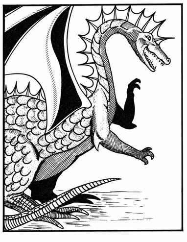

绿龙 · Green Dragon（Draco Chlorinous Nauseous Respiratorus）
 |
|
绿龙喜欢在阴郁荒野的森林中或附近寻找地下巢穴。它们脾气恶劣，彻底邪恶。绿龙通常以爪、爪、咬攻击，或喷吐氯气毒云；毒云长 5 寸、宽 4 寸、高 3 寸。
能够说话并施法的绿龙，在前四个年龄阶段各获得一个一环法术；之后每个阶段各获得一个二环法术，最多掌握四个一环与四个二环法术。随机决定法术。
上一节：金龙 · Gold Dragon（Draco Orientalus Sino Dux）
下一节：铂金龙 · Platinum Dragon